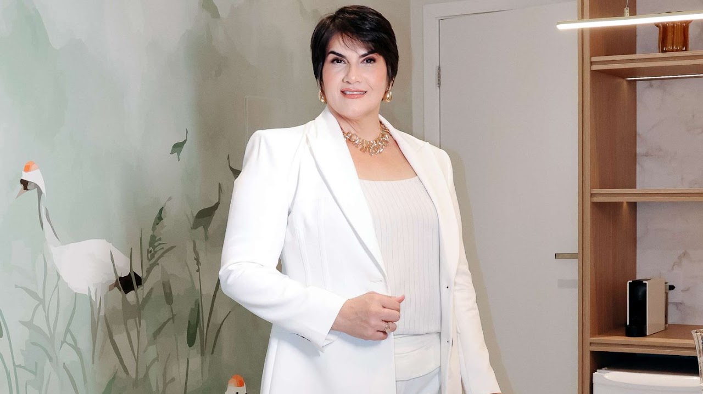

Clareza e direcionamento
Reconheça seu propósito e concentre sua energia no que faz sentido para sua trajetória.
COM LUCIANE MAGALHÃES
Transforme bloqueios em movimento.
Desenvolva sua mentalidade, amplie sua visão e construa uma nova forma de crescer.

Evoluir precisa
ser rotina.
01 / A MENTORIA
A Evolution reúne metodologia, acompanhamento e ferramentas práticas para transformar seu desenvolvimento em ação, na vida e nos negócios.
Um programa com abordagens de coaching e mentoring, criado para trabalhar seus desafios com proximidade e propósito.
Reconheça seu propósito e concentre sua energia no que faz sentido para sua trajetória.
Desenvolva habilidades para lidar com pressões, tomar decisões e liderar pessoas.
Organize suas atividades, melhore sua produtividade e reduza a carga mental.
Amplie sua visão com ferramentas práticas para o seu desempenho profissional.
Conte com um espaço estruturado para trabalhar desafios e acompanhar sua evolução.
RECONHEÇA SEU MOMENTO
Talvez o próximo passo seja olhar de outra forma para o que está impedindo seu crescimento.
Conheça sua jornadaDificuldade em atrair clientes de forma consistente, fechar contratos ou se destacar no mercado e nas mídias digitais.
Desafios para equilibrar demandas pessoais e profissionais, delegar tarefas, engajar a equipe e tomar decisões estratégicas.
Medo do fracasso, procrastinação e falta de confiança. Pressões e conflitos que afetam suas decisões e seu desempenho.
Pouco acesso a uma rede de relacionamentos que contribua com oportunidades e com o seu crescimento profissional.
02 / SUA JORNADA
Seis meses para trabalhar sua mentalidade, organizar seus próximos passos e avançar com acompanhamento.
O primeiro passo para a Mentoria Evolution.
Onboarding e acesso à Metodologia Evolution.
Desenvolvimento com frequência e direção.
Um olhar para crenças e bloqueios que limitam sua ação.
Orientação para redes sociais, se necessário.
Checklist para organizar seus próximos passos.
Um momento para revisar a direção da sua jornada.
Suporte contínuo durante os seis meses.
03 / HISTÓRIAS REAIS
Conheça a experiência de quem passou pela Mentoria Evolution, nas palavras dos próprios mentorados.

04 / SUA MENTORA
Mais de 30 anos dedicados ao desenvolvimento de pessoas.
Uma trajetória que une vivência empresarial e desenvolvimento humano. Luciane atuou por 13 anos no agronegócio e reúne sua experiência na Metodologia Evolution.
Graduada em Ciências Contábeis e Psicologia, é mentora profissional, terapeuta, professora e palestrante internacional.
Coach ICI Integral; hipnoterapeuta Proficiency ES; Practitioner e Meta Practitioner em PNL; facilitadora em PSYCH-K; certificação em Psicologia Positiva e em Hipnose Ericksoniana básica e avançada.
Formadora e criadora de cursos, incluindo um curso com selo internacional da HCN World, empresa de treinamentos sediada em Copenhagen, Dinamarca.
SEU PRÓXIMO CAPÍTULO
Você não precisa construir sua próxima fase sozinho.
Comece sua jornada com a Mentoria Evolution.